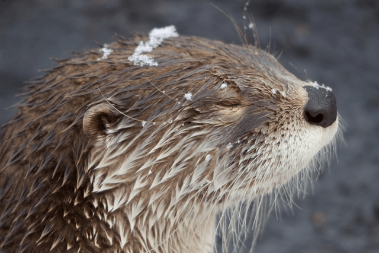
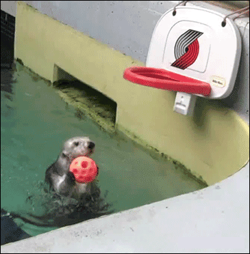
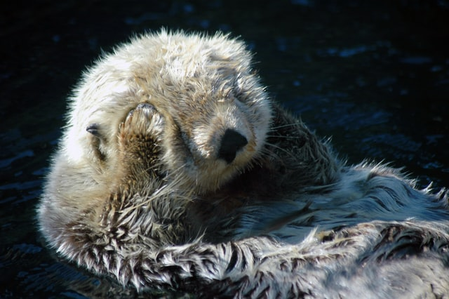

<h1>netlify-plugin-image-optim-test</h1>



<a href="https://unsplash.com/s/photos/otter?utm_source=unsplash&amp;utm_medium=referral&amp;utm_content=creditCopyText">Source</a>



<a href="http://gph.is/1c7muRQ">Source</a>



<a href="https://unsplash.com/s/photos/otter?utm_source=unsplash&amp;utm_medium=referral&amp;utm_content=creditCopyText">Source</a>

<object data="img/otter.svg" type="image/svg+xml"></object>

<a href="https://freesvg.org/otter">Source</a>

